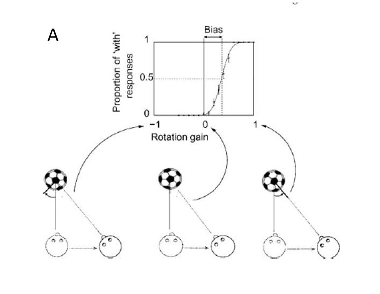
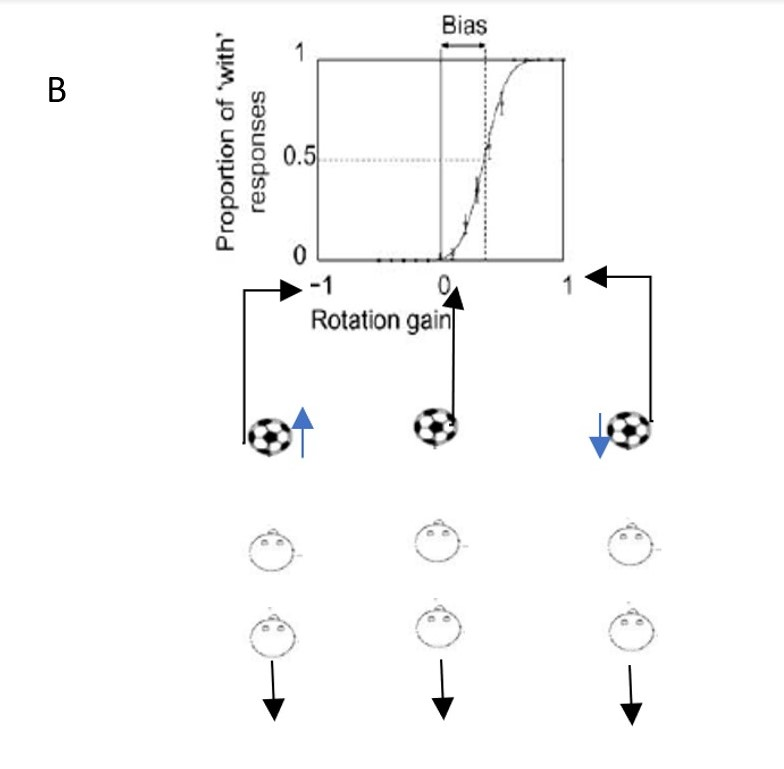
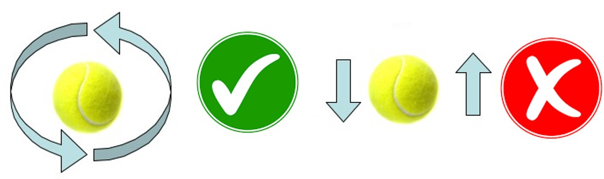

Measuring perceptual stability
With vritual reality (VR)
A project by Omar Faruk
What are we trying to find?
As we move around an object we percieve it as stationairy. But why not as rotating? How do we process the properties of objects accurately?
Past research
Past research has shown that we percieve objects with a "bias" so they move a little with us to be percieved as stable.
Press down to find out more about key studies!
Tcheang et al. (2005)
- In this study participants moved sideways whilst observing a rotating ball.
- The participant was asked if the ball moved "with" them (in the same direction as them) or "against" them in the opposite direction.
- The ball rotated at different "gains" which means the amount of rotation changed in response to the participant's movements. See figure A for more details!
How they retrieved data...
The "bias" is the difference between when the object was stationairy and when the participant viewed the object as stationairy. They found a bias as large as +0.45! Press down for more.
Other movements - Wexler (2003)
In this study the ball did not rotate, but moved forwards and backwards axially. The concept was similar to the previous study, however the "gain" parameter changed in response to the participants forward and backward movements. See the figure B. Press down for more details on Wexler's study...
Other movements - Wexler (2003)
- In this study a bias as large as +0.38 was found.
- A larger bias of +0.57 when the participant's movement was involuntary. This can be seen in figure C.
- This demonstrated that voluntary movement reduced "bias." To find out more about why we investigated voluntary and involuntary movement click down!
Wexler (2003) - Continued...
- In Wexler's study participants in the involuntary condition were moved on a office chair.
- This removed their sense of efference and proprioception.
- This increased both the "bias" and also the "sigma".
- "Sigma" is how sensitive participants were to the ball stimuli.
- A higher "sigma" value indicates less sensitivity to the stimuli. Wexler's "sigma" values are displayed in figure D.
What is my study trying to accomplish?
- Replicate both Tcheang and Wexler's studies.
- Their methodology uses outdated methodolgy to conduct the experiment. We will use an immersive VR environment to update the original experiments.
- Sample size is an issue. Tcheang had 5 participants whilst Wexler had 11. This raises questions as to the validaty of their study.
- To expand the Tcheang's experiment by providing a involuntary condition similar to that of Wexler's experiment.
- This will allow us to see if changes in "bias" and "sigma" are consistent with different movement condition.
- To investigate if there is a relationship in "bias" between the different movement types.
- If a relationship is found it will prove the existence of a common stability mechanism for different movement types.
How was it achieved?
- Participant's view a 3D ball in a virtual scene.
- Participant's then complete Tcheang and Wexler's original experiment..
- Participant's will record their "with" and "against" responses with a controller.
- Lastly, participant's complete both experiments in the involuntary movement condition. Press down to see how!
The involuntary condition
- To achieve this participant's will sit on a specialised office chair with the VR helmet on and perform the task with the experimentor moving them.
- The chair was on a rails system and could be adjusted to move forwards/backwards or side to side.
We managed to recruit 16 participants
- Posters were placed throughout the UoM's campus.
- Yes that is me, I do modelling too ;)
How will we do the analysis of the data?
- The programming language "R" will be used for data analysis.
- To check for consistent replication of past studies a one-sample t-test will be used.
- A within-subjects ANOVA will be used to compare any differences between the voluntary/involuntary movement condition AND the ball rotation/axial movement conditions.
- A Pearson's correlation will be made between the different movement conditions to see if there is a common stability mechanism between the different movement types.
- Click the image below to see the R script yourself!

And the results are in!
The results
| Participant movement + Ball movement type | Mean Bias | Mean Sigma |
|---|---|---|
| Voluntary + rotation | 0.17 | 0.26 |
| Voluntary + axial | 0.15 | 0.25 |
| Involuntary + rotational | 0.26 | 0.38 |
| Involuntary + axial | 0.26 | 0.38 |
One Sample t-test / BIAS results
| Participant movement + Ball movement type | t-statistic | Significance value |
|---|---|---|
| Voluntary + rotation | 3.07 | <.005* |
| Voluntary + axial | 2.87 | <.005* |
| Involuntary + rotational | 4.64 | <.005* |
| Involuntary + axial | 4.75 | <.005* |
One Sample t-test / SIGMA results
| Participant movement + Ball movement type | t-statistic | Significance value |
|---|---|---|
| Voluntary + rotation | 8.64 | <.005* |
| Voluntary + axial | 9.36 | <.005* |
| Involuntary + rotational | 5.91 | <.005* |
| Involuntary + axial | 10.40 | <.005* |
This means that replication of the past studies was a success!
As the means were higher than 0 and the probability of attaining those means were less than .005 it was highly unlikely this was due to chance.
HOW EXCITING!
The ANOVA results... For bias
- No main effect of object movment type (rotation vs axial). F(1, 15) = 0.00, p = .949.
- No interaction between object movement type and participant movement type (voluntary vs involuntary). F(1, 15) = 0.24, p = .632.
- However, significant main effect of participant movement type! F (1, 15) = 11.63, p = .004. See the post-hoc by pressing down.
Post hoc test to investigate main effect further
- Voluntary and involuntary conditions was significantly different when comparing the axial movement condition in both voluntary and involuntary movement, t (29) = -2.55, p = .017.
- But the same effect could not be found for the rotational condition... t (29) = -1.79, p = .084.
The ANOVA results... For sigma
- No main effect of object movment type (rotation vs axial). F(1, 15) = 0.99, p = .335.
- No interaction between object movement type and participant movement type (voluntary vs involuntary). F(1, 15) = 0.35, p = .564.
- Again, a significant main effect of participant movement type! F(1, 15) = 6.28, p = .024. Press down to see post-hoc test.
Post hoc test to investigate main effect further
- Voluntary and involuntary conditions was significantly different when comparing the rotational movement condition in both voluntary and involuntary movement conditions, t (29) = -2.55, p = .017.
- But the same effect could not be found for the axial condition... t (29) = -1.79, p = .084. 
Correlation Results - Voluntary
- A weak positive correlation was found, however...
- No significant correlation was found in the voluntary condition between rotational and axial movement, r(14) = .24, p = .372.
- But what about involuntary correlation? Press down.
Correlation Results - Involuntary
- A moderately postive correlation was found in the involuntary condition, but...
- Again, no significant correlation was found between the rotational and axial movements, r(14) = .49, p = .053.
What does this all mean?
- The one sample t-tests show a successful replication of both Tcheang and Wexler's past experiments.
- The ANOVA results show that a higher bias and sigma value was obtained in the participant movement type. This is good!
- However, using a post-hoc test this higher value could not be found in both axial and rotational movement together... This is problematic.
- No significant correlation between bias for either object movement type could be found. This was true for both participant movement types.
Why the mixed results?
- Maybe there is a seperate stability mechanism for rotational and axial movement and the lack of significant results show it.
- OR our sample size is too low. We were constrained for time and could only recruit 16 participants. It is recommended that 20 participants should be used for a correlation.
- Participants were seated for the involuntary condition. This is much different than being stood up for the voluntary condition and therefore could have impacted the ANOVA resutls.
Final thoughts
- I believe this project could serve as a good pilot to build future research upon. I was one of the first students to use a VR laboratory at The University of Manchester so gaining the positve results that were collected was a big achievement considering the new frontiers that were faced.
- No evidence was obtained to suggest a common stability mechanism. However, we did successfully replicate past research!
- Future studies need to collect a larger sample size.
- A more consistent method needs to be established between the voluntary and involuntary movement conditions. This will lead to more accurate data.